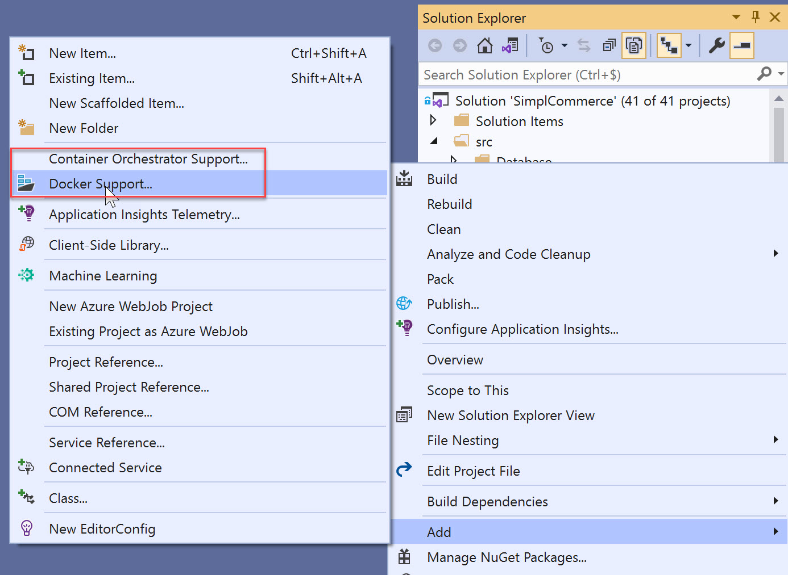
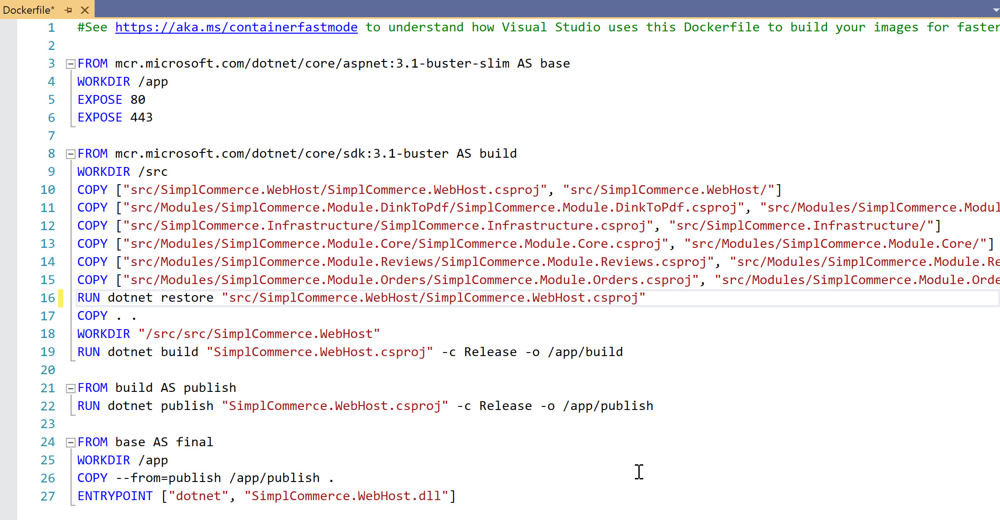
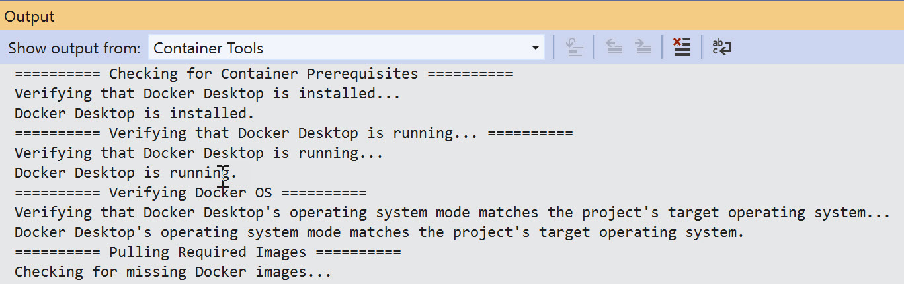
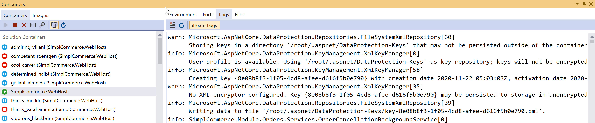
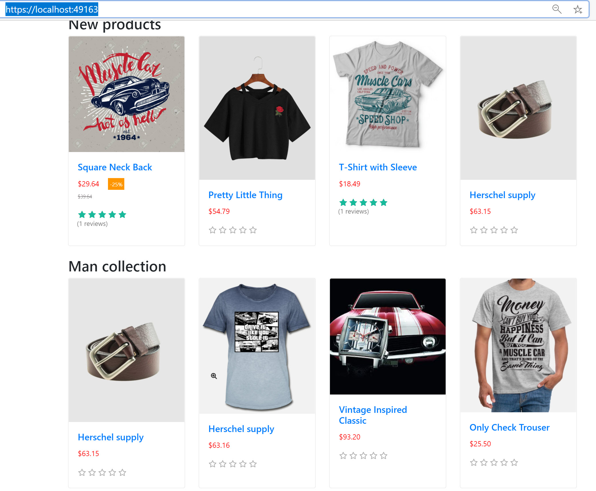
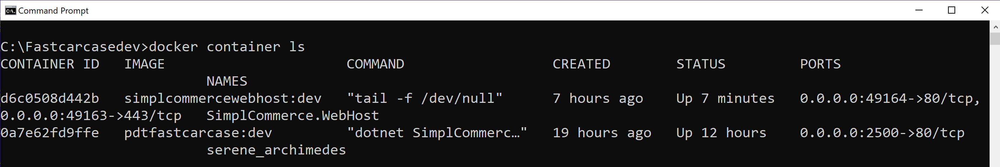

Hey there,
I’ve been doing quite a lot with Docker and the different Azure Container Services offerings like Azure Container Instance and Azure Kubernetes Services.
As you probably know, the starting point of a containerized application is the Dockerfile. Look at this like an instruction script, which tells Docker what needs to happen, in order to grab the application source code, compile it and produce the container image.
Besides the complexity of running containers by itself, I personally think writing a Dockerfile is equally difficult and complex. So I am more than happy to know that Visual Studio (2017 and 2019) comes with some interesting Container Tools. Aside from helping in debugging containerized workloads, providing some interaction with the Docker engine, it also helps in compiling a Dockerfile for you.
Or at least “it pretends”… Read on to find out about my journey, messing around for 2,5 days before I actually got my Docker container working…
Add Docker Support
When you run Docker Desktop on the same machine as your Visual Studio development environment, you don’t need to do anything. The integration is just there (I honestly never looked into the details how this works, but hey, it is there…)
- From VS2019 Solution Explorer, right click on the Project you want to containerize
- Select Add…
- Notice Docker Support

-
From here, it prompts for the Operating System for the container workload, being Linux or Windows; I guess this depends on the app language you are using though; since, in my case, my sample app is using dotnetcore3.1, which runs on both, I could choose.
-
From here, it produces the necessary Dockerfile, looking like this:

-
At first glance, all looks good, right? This is what the Dockerfile is doing:
- Grab the ASP.NET 3.1 base container image and specify the work directory as /app, and expose the application on port 80 and 443; this makes total sense, as we are working with a web application here
- Next, grab the DotnetCore 3.1 SDK base container image and specify the work directory as /src
- Followed by copying my application source code into it
- From here, it runs the usual dotnet restore, build, publish
- Producing a final Docker image, which executes “dotnet and start my SimplCommerce.Webhost web application within the Docker Container.
-
At second glance, all still looked good, where I was starting my container (F5). The “Build” process kicks off, similar to running this for a traditional code-based application, and going through the Docker compile process as expected:

- Once the build process is done, it switches to the Container Tools view, exposing details about the actual running container (ports, logs,…)

- As well as showing a running application in the browser

Where it goes wrong
I was super excited at this point; I got my web application running, moved it into a working Docker Container, just by going through 3 clicks. Awesome!!
Since the intention is to run my application outside of Visual Studio debug mode, I was obviously running a second test, by manually starting my container using the Docker command line.
Docker run -p 2500:80 fastcarcase:dev is the command to kick off my container instance, and all seemed fine when checking the running container state:

However, when browsing to http://localhost:2500, nothing is showing up; also, the container is not providing any logs. Not even when running in interactive mode.
From here, I started redoing a lot of steps, going through about all troubleshooting steps I could find online, starting all over from the application source code, going through the Add… Docker Support steps once more,… always resulting in the same. A workable containerized application in Visual Studio debug mode, but not when starting the exact same container manually. Frustrating :)
The life saver
After trying, trying again, trying once more,… I thought about why not creating a Dockerfile manually and testing from there. GOOD THOUGH apparently.
Here is the Dockerfile I came up with, after reading several Docker articles, blog posts and validating several of my other sample applications from earlier demo scenarios I used:
|
|
Technically, this Dockerfile is doing almost the exact same as what the Visual Studio generated one did, using the exact same base images (dotnet sdk and dotnet asp.net), as well as copying all the files, and using “dotnet SimplCommerce.Webhost.dll” as the starting command when the container starts up.
Surprisingly, this seemed to work fine! I could start my container on my local machine, but also push it into Azure Container Instance and run it fine, and even tried using it in my Azure Kubernetes cluster. And all was working fine.
Closing
I guess I need to go through the concepts and details of a Dockerfile much more in detail to figure out where the differences were, but at least for now, I can move on with building my next demo scenario. Automating all this using Azure DevOps Pipelines. Which will be for a future blog post I promise…

See you all soon, reach out when you have any questions or comments on this post or on Azure in general,
Cheers, Peter